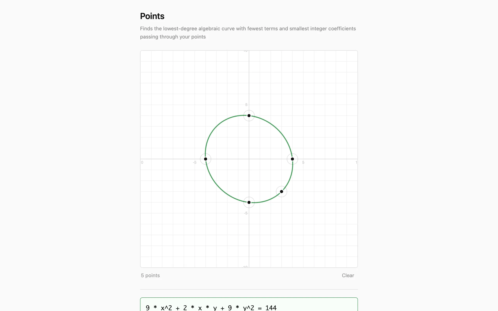
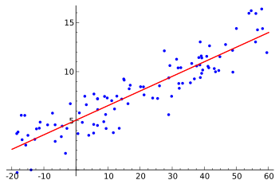
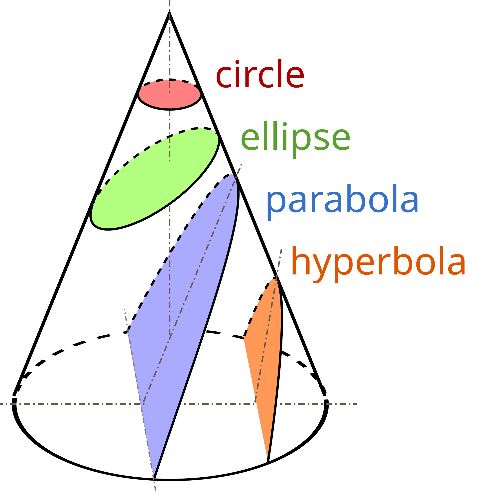

In 5th grade I played a game called Green Globs where green dots were scattered on a coordinate plane and you had to type in an equation whose graph passed through as many as possible. Points is the inverse of that: you click a few points on a grid and the computer finds the simplest algebraic curve through all of them. Not a polynomial fit or a regression, but an exact implicit equation with small integer coefficients, like x² + y² = 25 or x · y = 6. The solver finds lines, conics, cubics, and quartics in under a millisecond.

{kind=link}
Null spaces and Vandermonde matrices
The algorithm treats curve-finding as a linear algebra problem. An implicit algebraic curve of degree \(d\) takes the form \(\sum c_j \, m_j(x, y) = 0\), where each \(m_j\) is a monomial \(x^a y^b\) with \(a + b \le d\). Degree 2, for example, has six monomials — \(1, \; x, \; y, \; x^2, \; xy, \; y^2\) — and any conic section is a linear combination of them set to zero.
Given \(n\) clicked points \((x_1, y_1), \dots, (x_n, y_n)\), the solver builds a generalized Vandermonde matrix \(V\) where each row evaluates every monomial at one point:
\[V = \begin{pmatrix} m_1(x_1,y_1) & m_2(x_1,y_1) & \cdots & m_k(x_1,y_1) \\ m_1(x_2,y_2) & m_2(x_2,y_2) & \cdots & m_k(x_2,y_2) \\ \vdots & \vdots & \ddots & \vdots \\ m_1(x_n,y_n) & m_2(x_n,y_n) & \cdots & m_k(x_n,y_n) \end{pmatrix}\]The curve's coefficients \(\mathbf{c} = (c_1, \dots, c_k)^T\) must satisfy \(V\mathbf{c} = \mathbf{0}\), so the solver looks for a non-trivial vector in \(\ker(V)\). When \(n < k\) (fewer points than monomials), the system is underdetermined and the null space is non-empty, guaranteeing at least one exact solution.
Contrast with least-squares regression
A statistical approach would treat this as a regression problem. Given data \((x_i, y_i)\) and a model \(f(x;\beta)\), ordinary least squares minimizes the residual sum of squares:
\[\min_{\beta} \sum_{i=1}^{n} (y_i - f(x_i; \beta))^2\]For polynomial regression of degree \(d\), the model is \(f(x;\beta) = \beta_0 + \beta_1 x + \cdots + \beta_d x^d\) and the optimal coefficients satisfy the normal equations \((X^T X)\hat{\beta} = X^T \mathbf{y}\), where \(X\) is the design matrix. But regression finds an approximate fit — it minimizes error rather than eliminating it — and it only handles explicit functions \(y = f(x)\), missing circles, ellipses, and other curves that fail the vertical-line test.
Points takes the opposite approach: it demands exact interpolation through every clicked point and works with implicit equations \(F(x,y) = 0\), which naturally represent the full zoo of algebraic curves. The trade-off is that it requires enough monomials relative to points for the null space to be non-trivial.
Sparsity search and model selection
To favor simple results, the solver searches sparse subsets first. For each degree \(d \in \{1, 2, 3, 4\}\), it enumerates all \(\binom{k}{s}\) subsets of \(s\) monomial columns, starting from \(s = 2\) and working upward. The first non-trivial null vector found this way uses the fewest terms possible, which usually gives the cleanest equation.
This sparsity-first strategy is the implicit-curve analogue of model selection in regression. In the least-squares world, fitting a high-degree polynomial to few points leads to overfitting — the curve passes through the data but oscillates wildly between points. Regularization methods like the AIC or LASSO (\(\ell_1\) penalty) push toward simpler models. Points achieves the same goal combinatorially: by trying fewer monomials first, it finds the sparsest exact representation before a denser one is ever considered. When multiple solutions exist at the same sparsity, a scoring function picks the one with the smallest coefficients and the most symmetric use of \(x\) and \(y\), preferring x² + y² = 25 over an equivalent but lopsided form.

{kind=link}
From floats to exact integers
Gaussian elimination with partial pivoting produces a floating-point null vector \(\tilde{\mathbf{c}} \in \mathbb{R}^k\). These approximate coefficients need to be converted to exact integers to display a clean equation. The solver applies continued fraction expansion to each \(\tilde{c}_j\), recovering a rational approximation \(p_j / q_j\) with \(q_j \le 1000\). It then multiplies through by \(\operatorname{lcm}(q_1, \dots, q_k)\) and divides by \(\gcd(p_1, \dots, p_k)\) to obtain the smallest integer coefficient vector \(\mathbf{c} \in \mathbb{Z}^k\).
The result is verified using i128 integer arithmetic, with no floating-point at all, confirming that \(\sum_j c_j \, m_j(x_i, y_i) = 0\) holds exactly for every input point \(i\). If verification fails — meaning numerical error in the Gaussian elimination produced a spurious null vector — the candidate is discarded and the search continues with the next subset.
Rendering the curve
Once an equation is found, the grid draws the full curve as an overlay using a marching squares algorithm. It evaluates the implicit function at the corners of a fine grid of cells, detects sign changes that indicate the curve crosses through a cell, and interpolates the crossing points along each edge. The result is a smooth contour that updates instantly as you add or remove points. The canvas handles hi-DPI displays and points snap to a half-unit grid for cleaner placement.
Running in the browser
The solver is Rust compiled to WebAssembly, called from a Web Worker with 30ms debouncing so the UI stays responsive. Click anywhere on the grid to place a point; click an existing point to remove it. The equation and its curve overlay appear in real time. The entire solver is around 500 lines of Rust with no dependencies beyond wasm-bindgen.